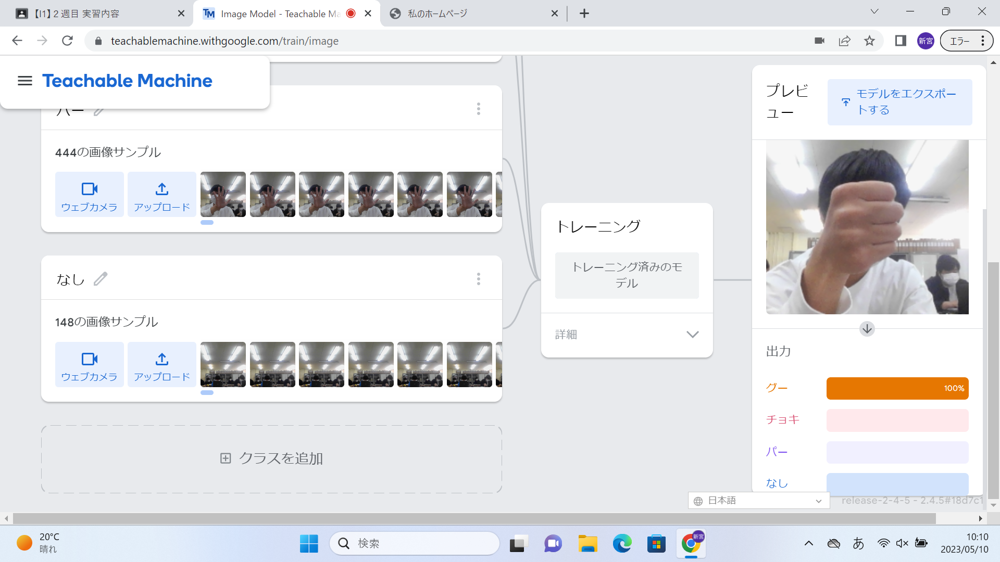
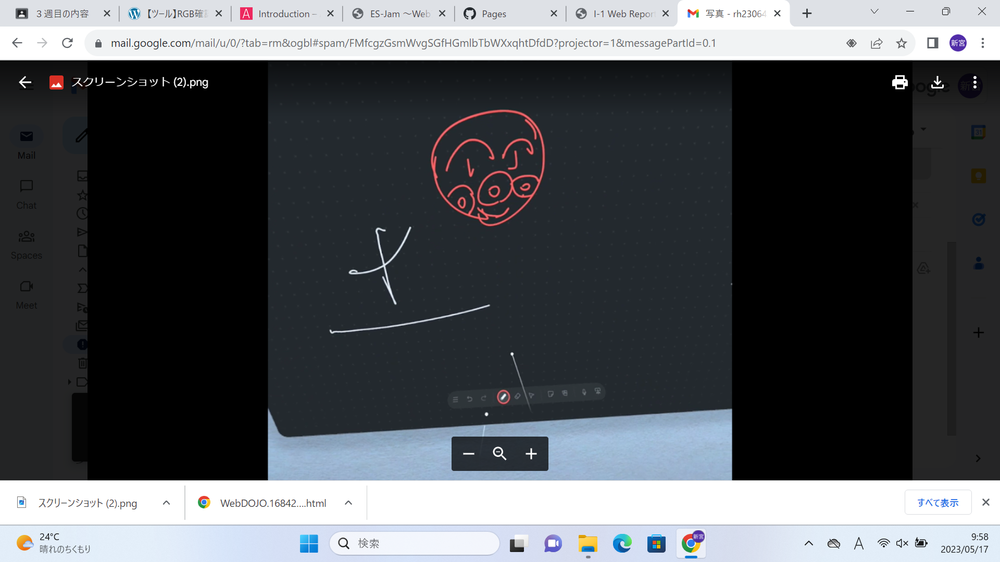

第2週目
2-1 １週目のレポートをHTMLで作る
１週目のレポート
1.内容
初めての手書きではないレポートを作った。1週目の実験実習の感想や内容をまとめた。実習の様子をスクリーンショットし、その写真をファイルとしてドラッグし、落とすだけで写真を張り付けることができた。
2.感想
初めてパソコンから課題を提出するので、なにか不具合がでないか不安な気持ちだった。でもいざ作ってみると、割と簡単で、複雑な作業とかもなく、順調に進めることができた。写真を張り付けるのも、紙で出そうとしたらコピー機で印刷してノリでつけるみたいな面倒くさい事をしないといけないけど、ドラッグするだけで張り付けることができたので、簡単にできました。
2-2 機械学習体験

1.内容
グー、チョキ、パーの手の形の写真を大量にとり、パソコンに覚えさせた。そして、今、手の形がどんな形なのかを判断させた。
2.感想
スマートフォンなどの顔認証システムは、このようにして誰の顔かを判断しているのだと分かった。それぞれの形を100％その形だと判断させることができた。でも、カメラからの距離や向きなどで、違う形が100％になったりしていたので、なんでなのかなと少し気になりました。そこはPCの性能や、そもそもうまく認知させることができなかったのかなと思った。
2-3 VR（バーチャルリアリティー：Virtual Reality）会議室の体験

1.内容
VRを使い、Workroomsというアプリで、ホワイトボードにいろいろなものを書くという事をした。また、ミラーリング用のPCを使い、VRで見ている世界を、PCで見れるようにした。
2.感想
僕はVRをすでに持っていて、楽しくてよく遊んでいました。そしてこの体験で、VRの楽しさを改めて感じることができました。アバターを自分で変えることもでき、好きな自分を作れるという事が良かったです。ホワイトボードには、自由に書けることができて、円周率を書いている人がいたり、今ネタにされていることを書いていたりと、個性が出ていて面白かったです。VRをつけて遊んでいる人を見ると、何も考えていない人みたいな感じがして、面白かったです。